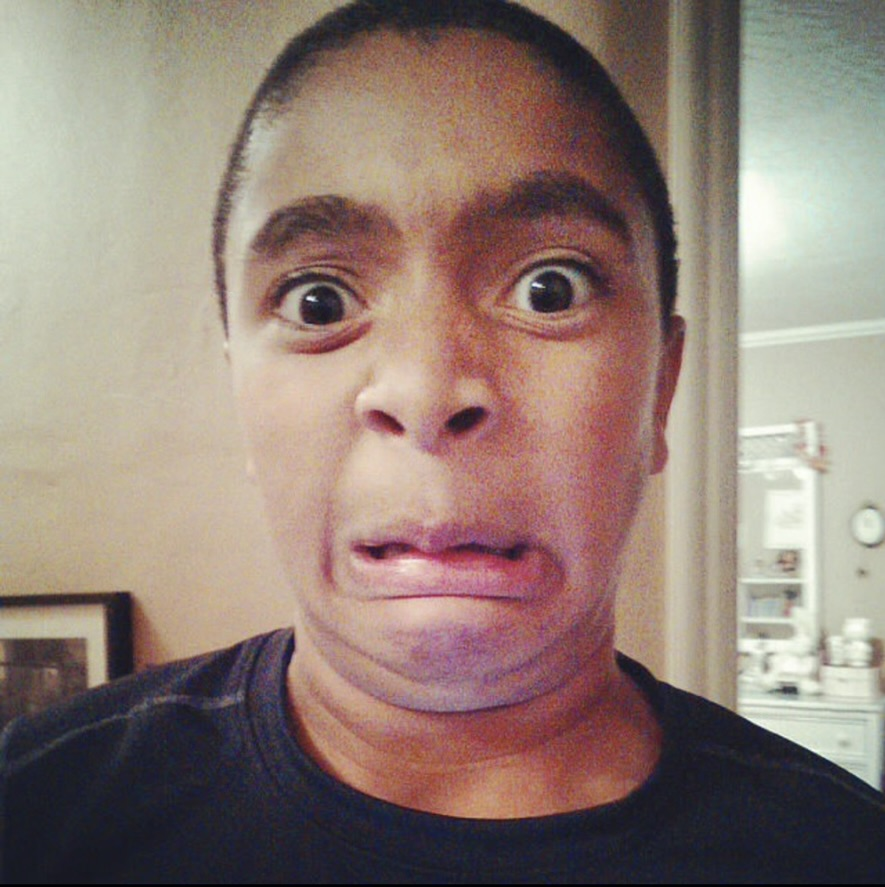
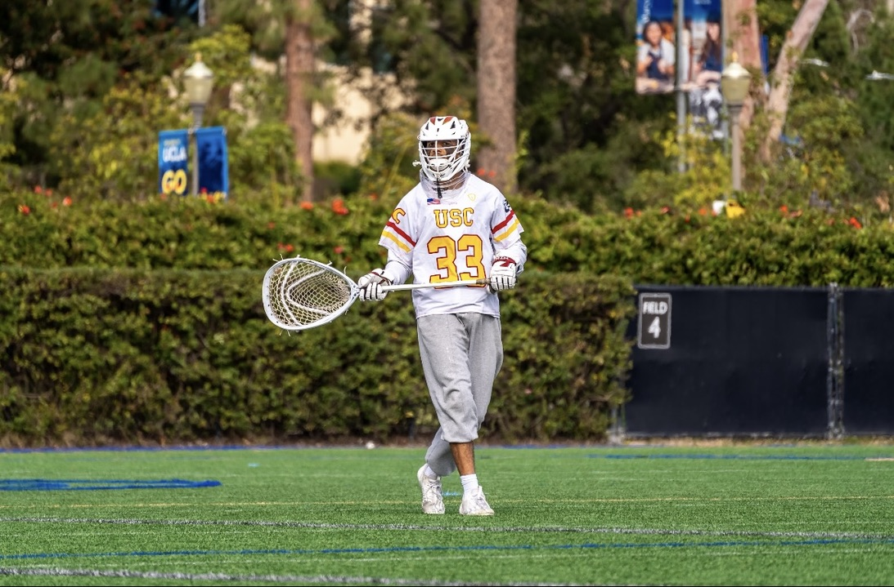
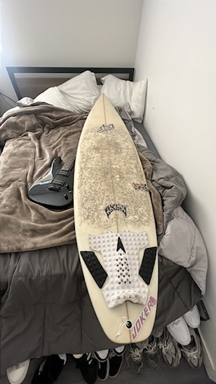

Me as a kid
President's Award, high school

Playing lacrosse at USC

My first surfboard
Why These Photos
The kid photo is just me being goofy at home, and I like keeping it around because it reminds me not to take myself too seriously. The President's Award photo is from my high school, Stevenson, and it marked one of my proudest academic moments before heading to college. The lacrosse photo is from playing at USC, which shaped a huge part of my college experience and taught me discipline that carried over into everything else I do. The surfboard is my very first one, still sitting in my room, and it represents picking up something completely new and sticking with it.